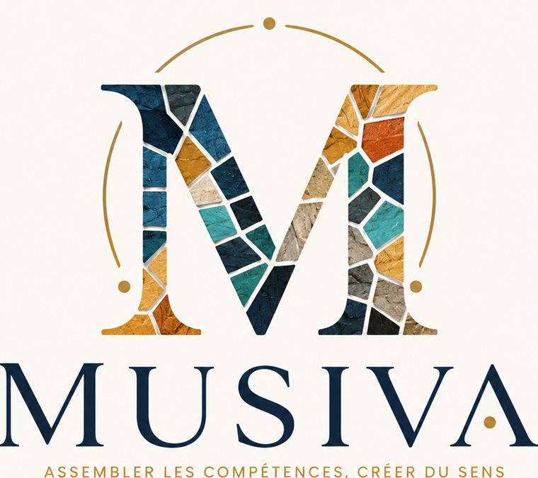

Prologue
Ce que dit le nom
Musiva. Le terme latin exact de la mosaïque murale — opus musivum. L'art de prendre des fragments disparates, de les tailler, de les assembler avec soin jusqu'à ce qu'ils forment une image cohérente, lisible, durable. Une image qu'aucune pièce seule n'aurait pu faire exister.
Ce nom n'a pas été choisi au hasard. Il a été trouvé en cherchant ce que Samir Chikhi fait réellement depuis 27 ans — pas le titre sur une carte de visite, pas la liste de services sur un site web. Ce qu'il fait dans le fond, dans la chair des organisations et des territoires qu'il traverse. Et la réponse est toujours la même : il assemble.
Il prend des pièces qui ne se parlaient pas — une collectivité et ses agents, un organisme de formation et le référentiel Qualiopi, une association et son modèle économique, un territoire et ses ressources — et il les taille, les ajuste, les pose l'une contre l'autre jusqu'à ce que l'ensemble tienne et fasse sens.